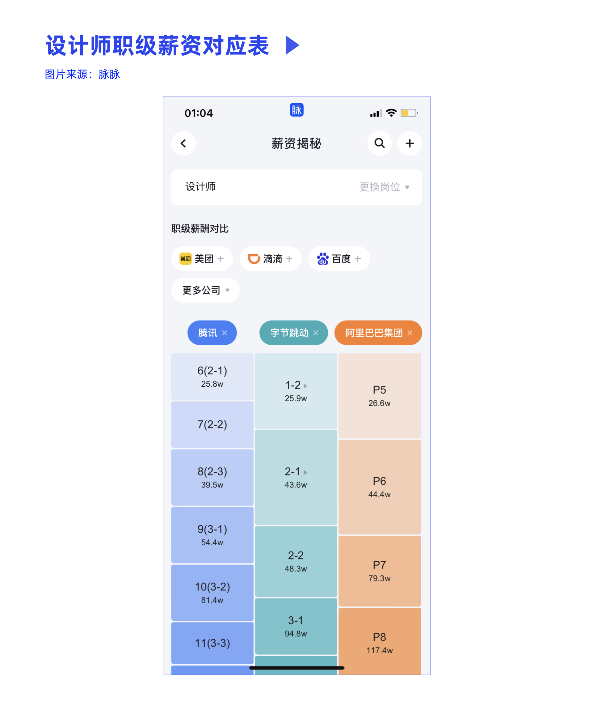
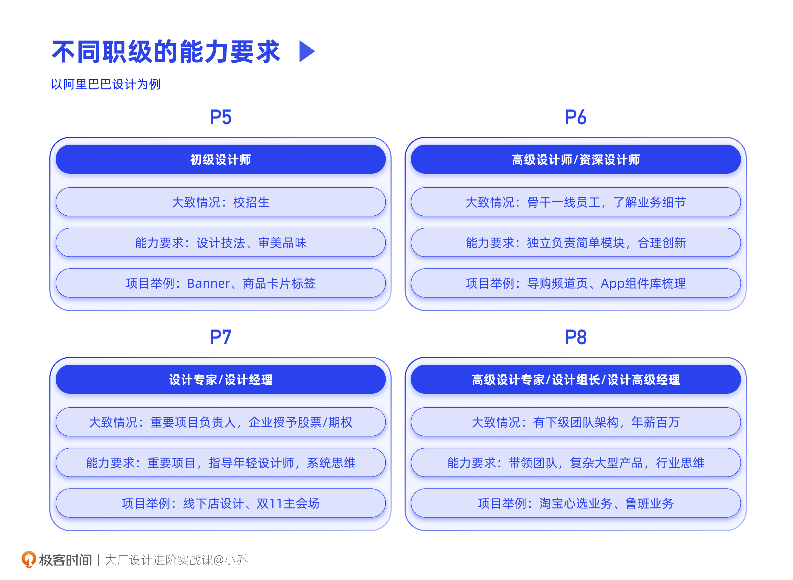
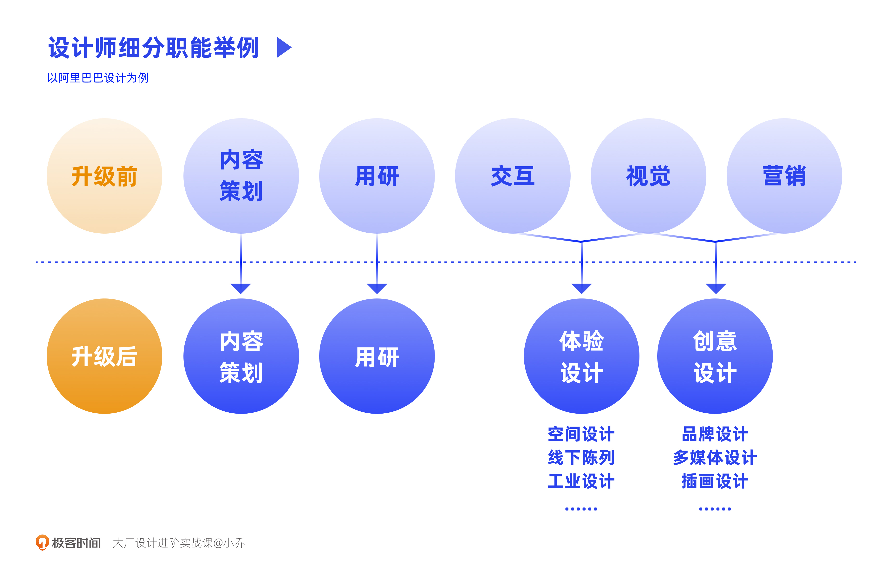

- 00 开篇词 升维思考，是设计师有效成长的第一步.md.html
- 01 业务周期：0-1-10-100-N的发展策略.md.html
- 02 商战模式：如何在商业竞争下突出重围？.md.html
- 03 市场洞察：如何找寻差异化撬动支点？.md.html
- 04 用户洞察：不懂用研的设计师不是好职场人.md.html
- 05 用户画像：是形式主义还是真的有效？.md.html
- 06 用户旅程：挖掘不同用户的核心机会点.md.html
- 07 职场晋升：看懂晋升的“游戏规则”.md.html
- 08 设计价值升级：五层进阶突破成长.md.html
- 09 基础价值 核心三原力：如何将需求转化为设计稿？.md.html
- 10 基础价值 第一性原理：从问题本质解决问题.md.html
- 11 基础价值 设计复盘：只是量化设计结果吗？.md.html
- 12 二级价值 负向网兜：如何全面发现负向问题？.md.html
- 13 二级价值 设计自驱：如何做好项目Owner？.md.html
- 14 二级价值 自驱合作：如何反内卷处理合作关系？.md.html
- 15 三级价值 增长误区：思维惯性陷阱和虚荣数据.md.html
- 16 三级价值 用户增长历程：AARRR是万能的吗？.md.html
- 17 三级价值 产品增长：如何做好产品创新？.md.html
- 18 三级价值 运营增长：如何自驱营销活动和投放？.md.html
- 19 三级价值 品牌增长 抢占心智，赢得人心红利.md.html
- 20 三级价值 增长实操：如何“步步为营”推动落地？.md.html
- 21 四级价值 L型赋能：让T型人才发挥更大价值.md.html
- 22 四级价值 “网状对比”解决共性痛点.md.html
- 23 五级价值 商业画布：设计师可以担任业务方吗？.md.html
- 24 五级价值 共创洞察：如何做好一次完善的workshop？.md.html
- 25 五级价值 领导力觉醒：写给新晋管理者.md.html
- 26 工作选择（上）：2B or 2C设计师？如何规划领域？.md.html
- 27 工作选择（下）：大厂 or 小厂？如何选择赛道？.md.html
- 28 人才地图：认知自我，成为高潜力人才.md.html
- 29 成长历程：如何从设计小白成长为团队负责人？.md.html
- 30 冰山模型：如何成为让面试官欣赏的“面霸”？.md.html
- 31 作品集指导：什么是面试官喜欢的作品集？.md.html
- 用户故事 什么是职场设计师进阶的正确姿势？.md.html
- 结束语 突破自我，成人达己.md.html
- 捐赠
07 职场晋升：看懂晋升的“游戏规则”
你好，我是小乔。
上一章，我们一起学习了分析商业和用户机会点的方法，背上了满满的行囊，现在，就让我们开启这一章的进阶攀登之旅吧。
在进阶之前，我们首先要了解职场的“游戏规则”。在我步入互联网行业的许多年里，并没有人教过我这些规则，因为大家也都在摸索。经历了多年的发展之后，这些规则逐渐成型，我想把我的经验分享给你，希望可以帮助你更高效地成长。
在过往的工作中，你是否曾有过以下疑问：
- 我每天特别认真，忙到夜里12点才下班，为什么最后晋升的却是一个7点就下班的人？
- 到底怎样才能晋升呢？是待的年限久就能晋升么？那我是不是这几年躺平就可以了？
- 每个级别都是什么要求呢？什么年龄应该达到什么级别？努力的方向是什么呢？
这些都是设计师们困惑又好奇的事情，接下来，我们就来一起聊聊，晋升这件事。
不同级别的人才要求
晋升到底意味着什么呢？它意味着我们已经展现出下一个级别应当具备的能力。企业看到了我们的能力，愿意对我们的未来做投资，因此才给我们晋升涨薪的，并不是因为过去立了战功而晋升。
所以晋升的关键在于，清楚下一个级别应该具备什么能力，并获得相应的能力。
根据下图可知，不同公司之间的级别和薪资是无法一一对应的，设计职能也有很多五花八门的title，比如：初级设计师、高级设计师、资深设计师、设计专家、团队主管、设计总监、资深总监等等。但是横向对比来看，不同大厂大致对应的层级，所需要的能力是相似的。

我们以阿里的职级来举例，同时对应到各大厂的title，来看看我们目前处于哪个阶段，晋升又需要具备什么样的能力。
P5：初级设计师
这个职级通常是校招生，大部分应届毕业生入职时，企业都会定级为P5，但也会将非常优秀或稀缺性很高的同学直接定级为P6。
对P5的设计师来说，设计技法和审美品味尤为重要，因为主要工作是设计执行。这个级别要求设计师可以在Mentor的指导下，独立输出简单功能点的设计，或一个模块中的一小部分工作，并同时培养对业务和用户的理解能力，建立逻辑链。
项目举例：相对来说，P5设计师的工作内容较为零散。比如，更换App Store上的图片、绘制Banner、给商品卡片设计标签样式等。虽然工作范畴较为窄小，但同样可以在深挖的过程中沉淀出高价值经验。以画商品卡片的标签为例，我们可以洞察出商品标签一共有哪些类型，样式如何优化可以提升转化率。
P6：高级设计师/资深设计师
这个层级往往是最为骨干的一线员工。
对P6的设计师来说，需要具备什么样的能力呢？我们需要独立负责产品模块的设计，并能根据对业务的理解进行合理创新。因此，除了设计手活以外，理解负责业务的目标并将其拆分为设计目标，推导合理的设计解法，是P6设计师必备的能力。同处于P6的设计师，能力差异也许是很大的，比如它对应了腾讯的3个职级，而阿里内部会有P6-和P6+的说法。
项目举例：P6设计师所负责的项目较为完整独立。例如，独立负责手机淘宝的几个导购频道页、完成一个App组件库的梳理、负责双11大促活动的几个分会场等。需要注意的是，工作范畴和部门的人事比例有较大关系，当人数大于事情时，所负责的项目就会相对窄小，当人数少于事情时，所负责的项目就会更为完整，甚至独立负责一个简单App。
P7：设计专家/设计经理
这个职级通常是重要项目的负责人，在团队中具备一定的影响力。在阿里，从P6晋升到P7是一道坎；在字节，从2-2晋升到3-1也是同理。从这个级别起，企业会授予期权或股票，因为企业投资的是这个设计师的未来价值，薪资也不再以月薪衡量，而是以月薪+期权股票+奖金的年包衡量。
这时就要求P7的设计师不仅要有负责项目的能力，更要有负责复杂且重要的项目，并能在工作中指导P5和P6设计师完成工作的能力了。同时，还需要强大的自驱推动能力，通过洞察分析商业和用户，找到设计的发力点，从而提升设计师在业务中的价值和话语权。P7的设计师需要有系统化思维，不再只是单点解决问题，而是体系地思考多个相关项目的完整全案。
项目举例：例如一个零售业务需要开设线下店，P7需要负责线下开店的所有设计工作，比如店铺布局设计、品类分区、商品陈列、POP灯箱海报设计、价格牌设计等，并沉淀出提升成交转化率的设计方法。再比如，像双11这样的S级大促项目，整体是庞大复杂的，最为主力的部分会拆分给几位P7来负责带领，如主会场在预热期、正式期、尾声期的全流程设计。
P8：高级设计专家/设计组长/设计高级经理
这个职级通常是设计团队管理者，负责一个复杂业务或多个小型业务的设计，年薪能达到百万左右。
那这个时候，我们又需要具备什么样的能力呢？从领导力角度来说，这一级别的设计师需要制定团队的中长期发展策略，搭建并优化团队，形成健康的梯队，也要负责高效培养下属，给团队打绩效。从专业角度来说，需要担任重要业务的设计负责人，精通商业和用户洞察方法，推导解决方案，并能在解决复杂问题的过程中，站在行业发展的高度，沉淀出体系化的解决方法。
项目举例：在做淘宝心选时，就是为了响应公司“五新”战略中的新零售方向，更为重要的，是得出体系化的解决方法，影响行业。再比如，鲁班就代表了智能中台的雏形，极大地减轻了P5的工作量，不断优化智能合图的逻辑，将偏向体力的工作交给产品化工具，释放时间产出更有意义的工作价值。

我们如何取得快速晋升？
从P5到P8，不同的职级对应着不同的能力要求，相信聪明的你，现在已经明白自己要提升的方向了。
你可能会好奇，是不是我工作年限久了，就能晋升呢？其实，级别和年龄并没有一一对应关系。有的同学晋升快一些，才工作5年就已经晋升到P8了；也有许多同学晋升慢一些，工作了10年还是P6。
我们曾在开篇词中讲过，想要好好地在职场中发展，不畏惧于任何行业的变化，需要我们保持高潜力和高价值。而保持高潜力的核心逻辑，是我们的成长速度可以超越年龄的增长速度，在同级别岗位中具备竞争力。
因此，晋升速度齐平于大部分同行，这是十分必要的，否则就容易在行业紧缩及要求提高时，被末位淘汰。比如P5晋升到P6，通常是在2年左右，如果工作了5、6年依然处于P5的水平，就要加速提升自己的能力了。如果可以的话，晋升速度超过大部分同行，更能突显高潜力。
那我们该如何取得快速晋升呢？首先，我们先来看看关于快速晋升的两种不同目标。就如同我们做项目一样，目标不同，解决方案也会不同。
- 第一种目标：我在某家企业的职级快速往上就行，但能力不一定很强；
- 第二种目标：我的能力快速成长，无论在哪家大厂哪个业务，都能得到认可。
这两个不同目标的核心差异在于，我们在意的是级别Title，还是真正的能力。不管你选择哪一个目标，都无关对错，关键是清楚自己想要什么。
第一种目标：追求级别和Title
我们先以第一种目标来说。如果仅仅是希望级别高一些，可以挑选竞争难度小的企业或部门，从而提升自己的稀缺度和竞争力。我们来看几个成功晋升的案例。
阿里的核心部门有许多优秀的P6设计师，但苦于业务已经在成熟期和衰落期，没有好业务机会，且团队里还有许多老人也在排队，因此迟迟得不到晋升。有许多P6设计师觉得在核心部门晋升太漫长，就主动转岗到阿里系的其他业务部门，几乎全部都在转岗一年后晋升成功了。
在几年前，有些通过收购并入阿里系的业务，在核心业务的员工转岗时，是可以直接提升一级的。也就是说，淘宝的P7设计师，转岗去了收购型业务，就自动升为P8，虽然薪资体系不变，但外界会认为这是阿里的P8。
这也是为什么外界总会议论，觉得阿里的同学能力参差不齐。因为级别虽然相同，但能力确实不对齐。也许级别是P6，但表现出了P8的能力；也许级别是P9，却甚至达不到P7的能力要求，跳槽十分困难。
据说目前阿里已经修改了转岗制度，不再允许这样的转岗情况。不过，如果从提升稀缺度和竞争力的思路来说，也可以从大厂跳槽到小企业去。通常核心部门的P6+就可以在小公司担任设计总监。这究竟是为什么呢？因为级别、薪资，背后反映的都是供需关系。小企业能招到优秀的人才并不容易，竞争就会相对较小；而大企业总是让优秀的人才趋之若鹜，竞争必然就会更为激烈，供大于求，那企业就更有话语权。
对于希望级别快速膨胀的同学来说，这样的方法无疑是聪明的，他们掌握了信息差，从而达成了自己的目标。就像创业、找业务机会点一样，掌握他人没有的信息差，满足短暂的供需不平衡，就可以达成目标。
但同时，这样操作的同学更需要保持清醒，避免自我蒙蔽。在未来跳槽去其他企业时，级别和薪资会重新被判定为真正的能力所在的级别，因为价值最终会回归，过往的级别仅仅是个参考。
第二种目标：追求能力的成长和跃迁
了解了第一种目标及其达成方式后，我们再来看看第二种目标。将自身能力的成长作为目标的同学，往往并不会把在大厂获得高级别视为结果，也深知能力才是抗击风险和保持竞争力的核心原因。
在非常时期，与能力不匹配的泡沫会破灭。以我身边的许多真实案例来说，同样是阿里的P6，有的设计师在跳槽到字节时级别是2-2，也有的是3-1。同样，也有字节3-1的设计师，在面试阿里时只能拿到P6的offer。
真正的能力才是屹立不倒的竞争力，真正的晋升也并不是Title的晋升，而是能力的晋升。也只有理解了这一点，我们才不会因为Title高就骄傲，也不会因为价值回归而被反噬。
既然如此，那么想要获得能力的成长，究竟该如何做呢？这正是我们这一章节的内容，一共21讲，我将与你一起由简入难，步步进阶。今天这一讲，我们先从硬实力和软实力说起。
硬实力：跟上节奏，走在前沿
近期，有许多被裁员的大厂设计师来咨询我，但当我看完他们的作品集后，发现问题是相似的——竞争力在当前时代已经不再符合要求，因此才被企业淘汰。有许多设计师的手活技法都很好，但整个作品集只有精美的视觉表象，没有体现对业务的理解和推导。
有些同学会很疑惑地说，自己是平面视觉，又不是交互和UI，也需要逻辑推导吗？也有一些同学，至今依然只会画交互稿，无法独立完成一个项目从交互到视觉的全链路支持。这些情况，其实早已不符合当前的行业要求了。
随着行业的发展，各企业对设计师的要求都是在不断提升的，每个级别的要求也以肉眼可见的速度越来越高。随着行业的成熟，未来也会更为苛刻。
早在2017年，阿里就在进行设计师职能升级规划。在2018年就去除了交互和UI的分工，要求设计师全链路，将原本的交互、UI、工业设计、建筑设计、线下陈列设计等都称为“体验设计”，也就是大家常说的UX；而原本的营销视觉、插画、多媒体、品牌设计等合并为“创意设计”。不管是体验设计师还是创意设计师，都需要懂业务，有逻辑，而非停留在手活技法阶段。

因此，想要获得能力的晋升，首先要横向对比行业头部企业的要求，跟上时代的变化，而不是固步自封，停留在原本的价值观里。再来，也需要纵向看待不同职级的要求，只有清楚往上晋升需要具备的能力，才有努力的方向。
软实力：主动自驱，承上启下
除了硬实力以外，我们也需要主动自驱，为自己争取机会。
我们都希望遇到自己的“贵人”，也会抱怨自己运气不好，没有遇到愿意花心力培养自己的主管。因为大部分Leader工作很忙，带宽有限，只能将精力重点投入在团队的几个核心骨干上，难以做到面面俱到。
与其以负面情绪抱怨主管，更好的方式，其实是我们主动去找主管聊，让TA看到我们的价值。当然不是两手空空去聊，而是带上自己的项目方案，说说自己对业务的理解和规划，同时也向TA说明自己的晋升预期，咨询自己不足的地方和努力的方向。
在了解了离晋升下一级的能力差距后，接下来就要靠我们自己努力成长了。一方面是根据能力差异进行补足，比如P5想要晋升P6，就可以主动承接一个较为完整的项目，并在完成基础支持后，能够自驱提出优化方案，推动落地；另一个方面，也要主动询问Leader需要什么，你是否可以帮上忙。
以我团队的一个同学举例，她是一位校招生，比我先入职。在我刚入职时，就主动问我有什么项目需要她来做。我当时正想好好整顿一下投放增长项目，就安排她做设计支持。由于我并不放心一位校招生来做这么重要的项目，因此由我亲自带着她一起完成。
我对她的要求并不只是完成素材设计支持，因为只是设计稿好看并不能证明设计价值，而是要有逻辑地灵活更换素材，总结出投放素材策略，得出怎样的话题、功能、素材风格、设计元素可以带来更多新用户注册且控制单价。她也根据我的建议迅速提升自己，因此仅仅工作一年时间，她就晋升了。
其他同学羡慕她，可以负责完整的项目，且由我直接来带，但其实这个机会是她自己争取来的。相信看到这里的你，一定明白了贵人的意义。贵人不是平白无故就会遇到的，大部分时候都是因为自己的能力吸引了贵人，或是自己勤能补拙，主动争取到了贵人的帮助。
有位MBA的老师曾和我说过一句话：人脉并不是你认识某个大佬，TA就是你的人脉了，而是你的能力足以帮到TA。这句话对我来说终身受用，我也将它分享给你。
今日小结
今天，我们一起了解了晋升的“游戏规则”。晋升的前提条件，是我们清楚下一级需要具备的能力，并通过硬实力和软实力的共同提升，达到晋升的目标。
在晋升的过程中，有许多投机取巧的方式可以快速提升职级和Title，对此，我们不鼓励也不反对，因为每个人的目标不同，追求自己想要的就好。
但我们需要明白的是，想要具备高竞争力且不会被时代抛弃，只有不断提升自己的能力。许多设计师赶上了互联网的红利，获得了高于传统行业的薪资，就认为自己所处的环境是安全的，觉得家里也有房有车，干嘛还要努力提升自己呢？
上一批这么想的，是90年代下岗的国企员工们。而随着这两年一波又一波的裁员，许多互联网人也终于意识到了“中产阶级陷阱”。正如我们在开篇词提过的，保持高潜力和高竞争力的核心逻辑，就是我们的成长速度可以超越年龄的增长速度。
从下节课开始，我们将根据设计价值的不同进阶方式，一起探讨设计师的成长实战路径。
互动时刻
回顾你过往的工作经历，是否曾因为晋升缓慢而烦恼过？你后来是如何获得晋升的呢？你遇到职场中的贵人了吗？
欢迎把你的经历和思考在留言区分享出来，与我和其他同学一起探讨。我们建立了一个读者交流群，欢迎你的加入！如果你觉得有所收获，也欢迎把文章分享给你的朋友一起学习。我们下节课见。
© 2019 - 2023 Liangliang Lee. Powered by gin and hexo-theme-book.